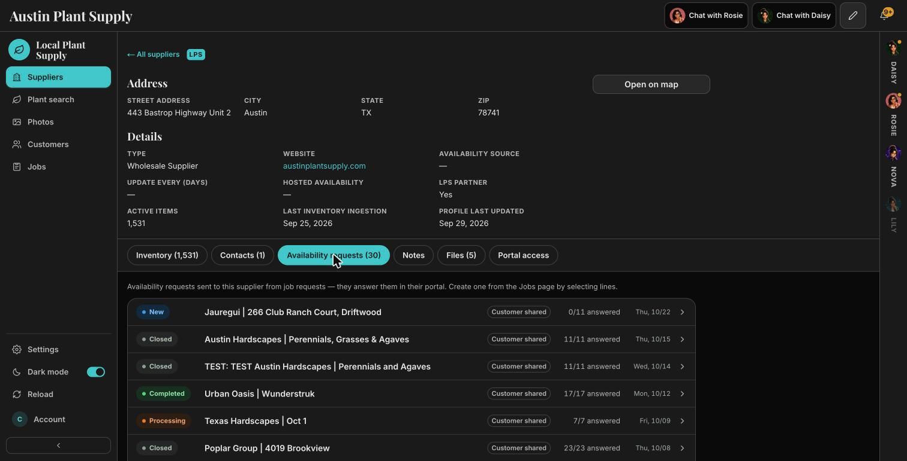

Availability requests
A price list says what a supplier usually carries. It does not say what is in the yard today. An availability request (AR) asks one supplier to confirm, line by line, what they can actually supply for one job. When the supplier presses Submit, the answers come back to LPS, and Chris decides which ones end up on the job.
In short
- What it is. An AR (shown as
AR-<n>) asks one supplier about one job's plants. Each line of the AR is a candidate: one specific plant, at one size, from that supplier. - One per job and supplier. A job never has two ARs with the same supplier. If LPS asks that supplier about more lines later, the lines go onto the existing AR.
- Draft first, then publish. Rosie prepares new ARs as private Drafts. She publishes one only after Chris approves. Publishing makes the AR New, and the supplier can then see it.
- How suppliers answer. LPS Partners answer in their supplier portal. Other suppliers get an emailed public link to that one request. For each line they pick Available, Partial Qty, Unavailable, Diff Sz/Sub, Can Order, Arriving Soon, or leave it Pending.
- Only a submitted answer counts. Answers the supplier has saved but not submitted are not final. When the supplier presses Submit, the AR becomes Completed and Rosie is alerted.
- Chris decides what reaches the job. A job line shows the answer of the candidate that is selected for that line. Choosing the selected candidate is Chris's decision. Rosie never selects a candidate just because of an answer. The one automatic switch happens on submission: a selected line the supplier answered with a substitute moves to that substitute.
- Only LPS sends an AR back to New. Edits and answers never reset an AR. To ask a supplier who has already answered about more lines, LPS reopens the AR first.
- Kept until its job is deleted. An AR can go back to Draft, which hides it from the supplier, or it can be Closed. It is kept as history. It is deleted only when its whole job is permanently deleted.
Sources: app/lib/availability.ts, app/lib/availability-queries.ts, harness/agents/daisy/migrations/0127_ar_publish_and_retention.sql, harness/agents/daisy/migrations/0128_one_ar_per_job_supplier.sql, 0130_job_lines_from_selected_candidate.sql, 0139_drop_candidate_demand.sql
Why availability requests exist
LPS prices a job from a supplier's price list. By default that is Austin Plant Supply (APS), unless Chris names another supplier for the job. A price list is indicative only. A plant on the list may already be sold, and a plant missing from the list may still be in stock. A quote built from the list is a good estimate, not a promise.
An AR closes that gap. It asks the supplier to confirm the actual stock, quantity and price for each plant the job needs. It also gives the supplier a structured place to offer a substitute or explain when more stock arrives. An AR is a question, not an order. Nothing is bought until the customer commits and LPS creates a supplier order (see Supplier orders).
ARs are optional. A quick quote stops at Quote with no AR. A committed order that arrives with prices already known goes straight to a direct order. A typical job runs Quote → Availability → Committed. Publishing an AR to an LPS Partner moves the job from Quote to Availability (see Jobs and job lines and Quote to order, end to end).
Sources: harness/agents/rosie/system_prompts/1-agent.md ("What needs Chris's yes"), harness/agents/rosie/skills/agent/supplier-coordination/artifacts/availability-requests.md, docs/app/all-jobs.md
One AR per job and supplier
Each AR belongs to exactly one job and exactly one supplier. A job has at most one AR with any given supplier. When LPS wants to ask that supplier about more lines, the lines are added to the existing AR:
| State of the existing AR | What happens when lines are added |
|---|---|
| Draft | The lines join the draft. If the ask comes from the All Jobs dialog, the draft is published at the same time. |
| New | The lines join the AR, and the supplier sees them immediately. |
| Processing / Completed | The AR must be reopened first, because the supplier has already answered. The app asks LPS to confirm: "Reopen <AR>?", with the action Reopen and add. On a yes, the AR returns to New and the lines join it. Reopening keeps the submission date, so the supplier's button reads Re-Submit availability. |
| Closed | Refused. The AR must be reopened from its status pill first. The app shows "AR-<n> with this supplier is closed — reopen it to ask for more". |
An existing public link is kept when lines are added, so a link the supplier already has keeps working. If someone selects lines from several jobs and sends them to one supplier, the app handles each job separately: it creates that job's AR with the supplier, or adds to the one it already has.

/suppliers/<id>). Each row names a different job, because a job has at most one AR with this supplier; the answered count shows how far the supplier has got on each one.How the rule is enforced
- Migration 0128 adds the
BEFORE INSERTtriggeravailability_requests_one_per_job_supplier, which runsguard_one_ar_per_job_supplier(). It refuses a second AR for the samejob_request_id+supplier_idwith "JR-<job> already has AR-<id> with this supplier; add candidates to it (reopen it first if it is submitted, processing or closed)" (wording from 0130). - The rule is an insert guard, not a unique index. Two legacy ARs on one job predate the rule and are kept.
- Each AR belongs to one job through
availability_requests.job_request_id, which isNOT NULLsince migration 0139.create_availability_requestraises "An availability request asks for one job's candidates" if the candidates span more than one job. - App side:
createAvailabilityRequestfinds the newest AR for (job, supplier). A closed AR raises the error above. A submitted or processing AR throwsReopenRequired("AR-<id> with this supplier is <status> — reopen it as New to ask for more"), which the route returns as 409 withreopen: {id, status}. The dialog then asks LPS to confirm and resends withreopen: true, which runsreopen_availability_requestbeforeadd_candidates_to_availability_request. With no AR, it callscreate_availability_request. add_candidates_to_availability_requestitself refuses a submitted, processing or closed AR ("AR-% is %: reopen it before adding candidates"). Since 0130 nothing moves an AR back tonewby itself: the oldcandidates_reopentrigger was dropped. A candidate that joins loses any earlier supplier answer, because a new ask means the answer is unknown. Values LPS set by hand stay.
Sources: harness/agents/daisy/migrations/0128_one_ar_per_job_supplier.sql, 0130_job_lines_from_selected_candidate.sql, app/lib/availability-queries.ts (createAvailabilityRequest, ReopenRequired), app/components/workspace/job-request.tsx, CHANGELOG.md 2026-10-05
Creating an AR
An AR can start in three places. In all three, the lines asked are candidates: supplier options on each job line (see Jobs and job lines).
1. Rosie prepares a draft (the usual path)
Rosie creates the AR as a Draft in the job's thread (jr-<id>), where she does all of the job's supplier work. By default she asks about one candidate per active job line:
- for APS, the line's default: the original request, meaning the plant and size the customer actually asked for, even if it isn't on the price list. If Chris has selected another APS candidate for the line, she asks about that one instead;
- for another supplier, that supplier's own copy of the original request. If it has none yet, she adds one, priced from that supplier's list.
She asks about other alternatives only after Chris has approved asking about that particular alternative. She also writes the note for the supplier: what LPS needs, plus any customer requirement that matters to the supplier, such as "Single trunk". Once Chris approves the scope, she publishes the draft.
2. The availability dialog on All Jobs
On the All Jobs list (/requests), select lines and choose Availability request in the selection bar. The Send availability request dialog opens:
- Review the scope. The dialog lists each job and how many lines it includes. With several jobs selected, it notes "One availability request per job will be created."
- Choose the supplier. The dropdown lists every active supplier, Partners and non-Partners alike. It defaults to APS (Austin Plant Supply).
- Confirm approval. Tick "Quote prepared; Chris approved sending availability". Send stays disabled until it is ticked. The dialog reminds you: "Generate the quote using APS pricing first. Quick quotes stop at Quote; send availability only when Chris approves."
- Decide on customer details. Tick Share customer details with the supplier only if the supplier should see the customer's contact and delivery address. It is off by default.
- Send. The dialog publishes straight away. It does not leave a draft. If some jobs fail, it reports "N of M created" with the reasons, and a retry skips the jobs that already succeeded.
If the job already has a Processing or Completed AR with that supplier, the dialog asks first: "Reopen AR-<n>?", with the action Reopen and add. On a yes, the AR goes back to New and the lines join it. The final message then adds "AR-<n> reopened as New".
Every job line has a default candidate: the customer's original request, priced from APS. When APS is asked, that default itself is asked. For another supplier, the dialog reuses that supplier's unasked original-request candidate for the line. If there is none, it adds a copy of the default and looks up the price in that supplier's catalogue. When the catalogue agrees on exactly one price for that plant and size, the copy gets that price. Otherwise it has no price, meaning "price not found". The supplier is asked to correct any price that has changed. For APS, a line whose default is already on an AR is skipped. If every selected line is skipped that way, the dialog reports "Every selected line is already asked of this supplier". For another supplier, the dialog skips nothing. A line already asked of that supplier gets a fresh copy, which joins the AR.
3. Drag a candidate onto the supplier's AR
On the focused job page (/jobs?jr=<id>), each supplier AR has its own tab after Request items and Orders. The tab shows a status-coloured dot, the AR number and the supplier name. Dropping one of that supplier's candidate pills on the tab adds it to a Draft or New AR. On a Processing or Completed AR, the app first asks "Reopen <AR>?". Reopen and add returns the AR to New and adds the candidate. A drop on a closed AR's tab shows the toast "<AR> is closed — reopen it to add to it". On an All Jobs card (desktop), you can do the same by dropping the pill on the supplier's tablet under Job details & notes → Related; the card header no longer shows supplier tablets. That adds it to the supplier's newest AR for the job that is not closed. If there is none, the toast reads "No open availability request with <supplier>".
![The focused job page for JR-111, Texas Hardscapes | Oct 1 for Austin Hardscapes, with the AR-77 Austin Plant Supply tab selected next to Request items and Orders. The tab shows an orange dot, and below it the AR is marked Processing, with Share, a ticked Share customer info checkbox and a print button. A status strip shows 7 total items, all 7 Available, with a subtotal of $471.75. The line table lists Need, Avail qty, Size, Plant with a note for the supplier, a Status picker set to Available, the supplier's note, unit price and line total.](screenshots/job-ar-tab.jpg)
/jobs?jr=<id>): an orange status dot, the AR number and the supplier name, after Request items and Orders. Inside it LPS sees the AR's status, Share and customer-sharing controls, and the supplier's answers line by line.What creation does, step by step
- POST
/api/availability-requestswith{jobRequestIds:[job], supplierId, shareCustomerDetails, itemIds}. The dialog sends one request per job. The supplier list comes from GET/api/availability-requests/suppliers(all active suppliers). The APS default usesisApsSupplier()inapp/lib/orders.ts, which matches "Austin Plant Supply" or "APS". - The supplier must be active ("supplier not found"), and every item must be an active line of the given jobs ("Every selected line must belong to an active line of the selected jobs").
originalCandidatesstarts from each line'sdefault_candidate_id, the APSis_originalcandidate the database creates with every line (0130). If the supplier is the default's supplier, the default itself is asked, or the line is skipped when it is already asked. For another supplier, it reuses that supplier's unaskedis_originalcandidate, or an unasked one with the line's name and size. Otherwise it inserts a copy of the default (name, size, description, note for supplier). The copy's price comes fromcatalogPrices, which runs onesearch_inventorycall per line in literal-substring mode. That search is filtered to this supplier,unit_price > 0and the same size. A price is used only when every matching row agrees. Otherwise the price is NULL, meaning "not priced" (0143). Only the default-supplier case skips a line. When every line is skipped, it raises "Every selected line is already asked of this supplier". The lookup for another supplier only considers unasked candidates, so a line already asked of that supplier gets a new copy.- A Processing or Completed AR raises
ReopenRequiredunless the body carriesreopen: true. With it,reopen_availability_requestruns first. The candidates are then added to the existing AR, or a new AR is created bycreate_availability_request, which always insertsdraft. If the RPC fails, newly inserted candidates are deleted again. - If the AR was just created, or the existing one is still a draft,
send_availability_requestpublishes it immediately. An AR that is already published stays as it is. - The route also accepts an optional
isPublic: true, which gives a Partner AR a public link too. The dialog never sends it. An existing link is never replaced. - The response is
{id, reopened, publicPath}.publicPathis/public/availability/<token>when a link exists, andnullotherwise. A refused reopen is a 409 with{error, reopen: {id, status}}. - Dragging a pill onto an AR tab or tablet calls POST
/api/requests/:id/items/:itemId/candidates/:candidateIdwith{action:'add', arId}, plusreopen: trueafter the confirm. It runsadd_candidates_to_availability_request, afterreopen_availability_requestwhen reopening. It does not publish a draft.
Rosie works directly in the database with the same RPCs: create_availability_request(supplier, candidate_ids, share_details, NULL) or add_candidates_to_availability_request(ar_id, candidate_ids), then send_availability_request(ar_id) after Chris approves. Adding to a Processing, Completed or Closed AR needs reopen_availability_request(ar_id) first, with Chris's approval. The old helpers request_candidate_availability and link_candidate_offer were dropped in 0130.
Sources: app/app/(workspace)/requests/page.tsx (AvailabilityRequestDialog), app/app/api/availability-requests/route.ts, app/lib/availability-queries.ts, app/components/workspace/job-request.tsx, harness/agents/rosie/skills/agent/supplier-coordination/artifacts/availability-requests.md
Drafts and publishing
A Draft is LPS's private workspace. The supplier cannot see it: not in the portal, not through a public link, and not through any answer screen. While an AR is a draft, LPS can add or remove candidates, edit plant names, sizes, quantities and notes, and even pre-fill answers it has already received by phone. None of it reaches the supplier.
Publishing moves the AR from Draft to New, and the supplier can see it from that moment. In the app, a draft shows a Draft badge and a Publish button. The button appears on the AR segment of a job card and in the footer of the AR tab or drawer. The AR editor says "Draft — hidden from supplier. Publish when ready.", and its footer says "Changes save privately. Publishing makes this request visible to the supplier." Publishing:
- requires an open, active job and at least one candidate ("Add at least one candidate before publishing"). A public link also requires an active supplier;
- gives a non-Partner supplier a public link automatically, which Rosie then emails with Chris's approval;
- for an LPS Partner, places the AR in their portal and records the job's
availability_sentevent. That event moves the job from Quote to Availability. For a public-link AR, Rosie records the event herself once the email has actually been sent.
Going back to Draft
A published AR, or a closed one, can be returned to Draft from its status pill. This is how LPS withdraws an AR. The AR disappears from the supplier's views, and its public link is revoked. Its answers and candidates are kept. A draft can only leave Draft by being published again, so the status pill has no options while the AR is a draft.
Publishing internals
send_availability_request(p_request_id)requiresstatus = 'draft'("Only a draft request can be published") and at least one active candidate. It setsnew. The status guard then requires an active job that is not won, lost or archived ("All linked job requests are closed"), and an active supplier whenever there is a token. If the supplier is not an LPS Partner and the AR has no token, it setspublic_token = gen_random_uuid().- App callers:
createAvailabilityRequest(the dialog); PATCH/api/availability-requests/:id{status:'new'}on a draft (setAvailabilityRequestStatus); the Publish button on a job card AR segment; and the AR editor footer (ar-editor.tsx). - The trigger
availability_requests_progress(functionadvance_linked_job_on_partner_request) callsrecord_job_workflow_event(job, 'availability_sent')only when the supplier is active and an LPS Partner, and the AR is inserted non-draft or leaves draft. Workflow events never move a job backwards or reopen a closed job. - Withdrawing:
setAvailabilityRequestStatus(id, 'draft'). The guard triggerguard_ar_public_linkclearspublic_tokenandsubmitted_at. In 0127, formerly "inactive" ARs became private Draft history with revoked tokens. - Admin answers on a draft go through the service-only RPC
edit_availability_request, which uses the same validation as a supplier answer. The draft stays a draft.
Sources: harness/agents/daisy/migrations/0120_candidate_description_and_draft_ars.sql, 0127_ar_publish_and_retention.sql, app/components/workspace/ar-editor.tsx, app/components/workspace/availability.tsx (ARStatusPill)
AR statuses
The AR header has five statuses. The database stores Completed as submitted, but every screen labels it Completed.
| Status | Stored | Seen by supplier? | Meaning | How it gets here |
|---|---|---|---|---|
| Draft | draft | No | LPS is preparing it. | Every new AR starts here, and LPS can return a published AR here. |
| New | new | Yes | Waiting on the supplier. | Publishing, or LPS reopening it. Nothing else returns an AR to New. |
| Processing | processing | Yes | The supplier has saved at least one answer. | A supplier answer. Answering again after Completed also comes back here. |
| Completed | submitted | Yes | The supplier pressed Submit. The submission date is stamped. | Supplier Submit or Re-Submit, or LPS submitting on the supplier's behalf. |
| Closed | closed | History only | Read-only. No one can edit it, and any public link is revoked. | Set from the status pill, or when the job is won, lost, archived or deactivated. Deleting the job deletes its ARs instead. |
The colours are the same on every screen. On the admin status pill, on a job card's AR segment and in the supplier portal's buckets, New is blue, Processing orange and Completed green. Draft and Closed are grey. A job card's AR segment shows the submission date once Completed and the creation date before that.
Every transition
| From → To | Triggered by |
|---|---|
| (created) → Draft | Rosie, or the dialog just before it publishes. |
| Draft → New | Publish, by Rosie after Chris approves, or by an admin in the app. |
| New → Processing | The supplier saves an answer. |
| New / Processing → Completed | The supplier presses Submit, or LPS submits for them. |
| Completed → Processing | The supplier changes an answer after submitting. The button reads Re-Submit until they submit again. |
| Processing / Completed → New | LPS reopens it: New on the status pill, or Reopen and add when adding lines. Edits and answers never do this. |
| Any published or Closed → Draft | An admin withdraws it from the status pill. The link is revoked, and answers are kept. |
| Any published → Closed | An admin closes it from the status pill. |
| Any, Draft included → Closed | Its job is marked Won or Lost, or is archived or deactivated. |
| Closed → New | An admin reopens it by choosing New on the status pill. The job must be open. A non-Partner supplier gets a fresh public link. |
| Closed → Processing / Completed | An admin sets it directly on the status pill. The job must be open. This is a plain status change, so no link is created. |
| Draft → Processing / Completed | Refused. Publish first. |
For the job, order and line lifecycles side by side, see Status lifecycles.
How the status and submission date are kept consistent
- Vocabulary:
AR_STATUSESandAR_STATUS_METAinapp/lib/availability.ts. The DB CHECK allowsdraft, new, processing, submitted, closed. Accessible names on AR links end in "— Draft", "— In progress", "— Completed" or "— Closed". submitted_atfollows the status. Enteringsubmittedstamps it. Onlydraftclears it.new,processingandclosedleave it alone, so it stays as history through a reopen, and the next submission compares answers against it. That is why a supplier who edits after submitting, or whose AR was reopened, sees Re-Submit.- The admin pill calls
setAvailabilityRequestStatus. It validates the target against the five statuses. Anewtarget on a draft is routed tosend_availability_request. On a Submitted, Processing or Closed AR it is routed toreopen_availability_request(0130). For any other target exceptdraft, it adds.neq('status','draft'), so a draft can only leave through publishing, and an admin cannot close a draft directly. reopen_availability_request(p_request_id)accepts onlysubmitted,processingorclosed("Only a submitted, processing or closed request can be reopened"). It setsnew, and mints apublic_tokenwhen the supplier is not an LPS Partner and the AR has none. The status guard refuses it while the job is closed.guard_ar_public_linkrequires an active, open job for any non-draft, non-closed status. It refuses Draft → Processing or Completed and clears the token on Closed and Draft. Since 0130 it no longer resets anything to New whennote_for_supplierorshare_customer_detailschanges.- A supplier answer runs
answer_availability_requestfromnew,processingorsubmitted, and setsprocessing. An admin answer (edit_availability_request) keeps the AR's status, Draft included.
Sources: app/lib/availability.ts (AR_STATUS_META), app/lib/availability-queries.ts (setAvailabilityRequestStatus), app/components/workspace/job-request.tsx, harness/agents/daisy/migrations/0127_ar_publish_and_retention.sql, 0130_job_lines_from_selected_candidate.sql
How suppliers receive an AR
The channel depends on whether the supplier has a portal login:
LPS Partner
The supplier has at least one portal login. The AR appears in their private portal at /partner/<id> under Availability Requests, with New, Processing and Completed buckets. A fresh visit shows New and Processing. Closed requests live under Order/Request History. Partner ARs are private by default.
Non-partner supplier
No login. Publishing creates a public link (/public/availability/<token>), and Rosie sends it in an HTML email after Chris approves that email. Creating the link is not the same as sending it.
Either way, the supplier sees the same request page: a header with the status, the job's name, the expected delivery or installation date (EDD) and Pickup or Delivery. When customer details are shared, the header also shows the customer's contact and the delivery address. Next comes a summary strip that counts Available, Partial Qty, Unavailable, Diff Sz/Sub, Can Order, Arriving Soon and Pending, with Total Items and Subtotal. Then come the line table (by default Need, Avail qty, Size, Plant, Status, Note, Unit price and Line total), a Note for this request box and the Submit button. While the AR is New and some lines already carry a price, the page says "Prices we already have on file are filled in — please correct any that have changed."
![The supplier portal for Austin Plant Supply, on the request page for Texas Hardscapes | Oct 1. The header shows a Processing status, a Pickup tag and the date Thu, 10/29, with Delivery address Not provided below. A status strip counts 7 total items, all 7 Available, with a subtotal of $471.75. The line table lists Need, Avail qty, Size, Plant, a Status picker set to Available, a Note field and unit and line prices. A Submit availability button sits at the bottom, and Share and print buttons are at the top right.](screenshots/portal-request.jpg)
/partner/<id>/requests/<arId>): the header with status and Pickup, the summary strip counting lines by answer, the line table with its status pickers, and Submit availability at the bottom. The AR number does not appear on the supplier's screen.The Note for this request box and LPS's request-wide note are the same field. The box starts out holding LPS's note, and whatever the supplier submits in it replaces that note.
Internal AR numbers (AR-<n>) in job names and LPS's notes are replaced with "availability request" on the supplier's screens. The one exception is the print sheet (see below). The full portal is described in Supplier portal and public links.
Public links
- Anyone holding the link can view and answer that one request. There is no portal navigation, chat or catalogue. The customer-disclosure setting still applies.
- The page refreshes when it regains focus and every 30 seconds. Every write rechecks that the link is still valid.
- The link stops working when the AR is closed, returned to Draft or made private, or when the supplier becomes inactive. The page then says "This link is no longer available."
- Making an AR public again always creates a new link. A revoked link never comes back, so after a reopen, share the fresh link.
Public link details
- The token is
availability_requests.public_token, a nullable unique UUID fromgen_random_uuid()orcrypto.randomUUID(). The routes accept only a canonical UUID. - GET
/api/public/availability/:tokenand POST/api/public/availability/:tokenare the only unauthenticated AR routes. They are exempt from the login gate inapp/proxy.ts. Responses carryCache-Control: no-store,Referrer-Policy: no-referrerandX-Robots-Tag: noindex, nofollow. - The read is scoped as the supplier. It has no allocations and does not return the token itself. Customer and shipping data appear only when shared and the AR has one job.
- The POST body is
{itemId, changes}to answer a line (answer_public_availability),{submit:true}, or{submit:true, supplierNote}(submit_public_availability_note). Errors matching/closed/ireturn 409. Other errors return 400, and an unknown or revoked token returns 404. - Partner reads use
listPortalRequests(all non-draft ARs for the supplier, at most 500) andavailabilityRequest(id, {forSupplierId, includeSharing:true}). Another supplier's AR or a draft returns 404, never 403. Portal text goes throughredactPartnerRequestRefs, which only matches AR references. - Partner pages refresh from the portal's own event stream (
/api/partner/:id/events), when the window regains focus, and on a 60-second fallback poll. Public-link pages have no event stream. They poll every 30 seconds and on focus.
Sources: app/app/api/public/availability/[token]/route.ts, app/components/workspace/availability-request-view.tsx, app/components/workspace/public-availability.tsx, app/lib/availability-queries.ts, app/lib/partner-display.ts
Supplier answers
For each line, the supplier picks an answer from the status picker. The picker lists the options in this order: Available, Unavailable, Diff Sz/Sub, Can Order/Arriving Soon, Partial Qty, Pending. Can Order and Arriving Soon share one picker option, and a dialog asks which one applies. They are still stored, counted and shown separately.
| Answer | Means | What picking it does |
|---|---|---|
| Available | The supplier has the asked plant, at the asked size, in the full quantity. | Saves immediately, with no dialog. Avail qty is set to the job line's quantity. |
| Partial Qty | The asked plant and size, but fewer than requested. | Opens a dialog asking for the quantity you can supply, prefilled from the current Avail or the demand. It also has an optional note, such as "rest ready in 3 weeks". |
| Unavailable | The supplier can't supply it. | Opens the same substitute dialog as Diff Sz/Sub, so the supplier can still offer one. The red No Sub button saves plain Unavailable: quantity becomes 0, the price is kept, and any earlier substitute is cleared. |
| Diff Sz/Sub | The supplier can't supply the asked plant but offers a different size or plant instead. | Opens the substitute dialog, which asks "Can you offer a substitute?". The supplier ticks one of the line's other priced candidates, or types one under Something else. A candidate already asked on this request is not offered, because it is answered on its own line. Submit stays disabled until a substitute is chosen. No Sub is shown only when Unavailable is selected. |
| Can Order | The supplier can get it in. | Opens the Can Order / Arriving Soon dialog with an ETA / notes field, such as "ready mid-Sep". On an order line it later appears as Need to Order. |
| Arriving Soon | Stock is on its way. | The same dialog. Its notes field asks when the stock lands and how many, such as "40 due the week of Sep 8". |
| Pending | Not answered yet. | Clears the answer and blanks Avail qty, since the quantity is unknown again. Prices and notes are kept. Pending does not count as an answer. |
The supplier can also edit the Price and Avail qty cells and write a reply note on each line. Changing an answer never changes the price. Only an explicit price edit does. The plant name, size, requested quantity and each line's note for the supplier are LPS's question, so the supplier sees them read-only.
How substitutes are recorded
A candidate is always one fixed plant at one fixed size, and suppliers cannot rewrite it. When the supplier offers a substitute:
- the asked line is stored as Unavailable, with quantity 0 and its price kept, but it reads Diff Sz/Sub everywhere it is shown;
- the substitute is stored as Diff Sz/Sub, with Avail set to the job line's quantity, at its own price. It stays linked to the AR so it can be ordered, but it is not a row of its own on the AR or in its counts;
- the asked row shows the substitute's answer: its status, Avail, price and reply note. The supplier's later price, quantity and note edits on that row go to the substitute;
- a ticked substitute writes a customer-ready note such as
30 G NA, 45 G Live Oak only; - a typed substitute creates a new placeholder candidate, named with what was typed and with no price. Rosie tidies its name, size and description after the AR is submitted.
Rosie can also prepare 2–3 similar listings from the same supplier as hidden substitute options. They appear only in the supplier's substitute dialog. If the supplier picks one, it becomes visible to LPS.
Answers LPS enters on the supplier's behalf
Suppliers sometimes answer by phone or email. An admin can enter those answers in the AR drawer or the job's AR tab, using the same picker. An admin answer keeps the AR's status: it does not move it to Processing or back to New, and an answer on a draft keeps it a draft. Rosie can also enter answers a supplier gave in portal chat, for the supplier to review and submit. She submits for them only when Chris tells her to.
Answer storage and validation
- An AR's lines are rows of
candidateswithavailability_request_idset. There is no separate AR-items table (since 0119).candidates.statusis NULL (Pending) or one ofavailable, partial_qty, unavailable, diff_size_sub, can_order, arriving_soon. diff_size_sub(renamed fromdiff_size_qty_subin 0130) marks the substitute row. The asked row is stored asunavailableplusoffered_candidate_id, and alsooffer_descriptionwhen the substitute was typed.arShownStatus()reads that combination as Diff Sz/Sub.- Supplier-writable keys, each sent as a JSON string:
status, available_quantity, unit_price, note_from_supplier, offered_candidate_id, offer_description, offer_unit_price, offer_quantity.offer_unit_priceandoffer_quantityare still accepted but ignored: a substitute's price and quantity are sent asunit_priceandavailable_quantity, which go to it. Any other key raises "Invalid answer field". Numbers must be finite.sizehas not been answerable since 0121. answer_availability_requestlocks the AR for (id, supplier). It refuses closed ARs, and drafts unless running as the admin edit: "This request is closed, draft or unavailable". It setsanswered_at. A status change sets the quantity for every writer:available= the line's demand,unavailable= 0, a substitute = demand unless given, and Pending = NULL (0132).- A ticked tag must be another active candidate of the same line and supplier ("Offered candidate must be another candidate of this line and supplier"). It may not be one asked on this request in its own right ("That candidate is asked on this request: answer it on its own line"). A substitute row can't be answered directly ("This is a substitute: answer the line that offers it").
diff_size_subsent without an offer raises "Pick or describe the substitute". Replacing a substitute retires a typed one and removes a ticked one from the AR. apply_candidate_offerattaches the substitute to the same AR asdiff_size_sub, with Avail = the job line's demand, and clearshide_from_lps. Its price and reply note come from the answer. App reads drop substitute rows withwithoutSubstituteRowsand give the asked row the substitute's answer withwithSubstituteAnswers.- Alternatives offered as tags are the same supplier's other active candidates on the line with
unit_price > 0, hidden ones included, minus any asked on the same request (unless it is this row's substitute) (alternativesFor). - The portal's By status board groups lines by
arShownStatus(), so a current substitute appears on the Diff Sz/Sub card.
Sources: app/lib/availability.ts (AR_RESPONSES, AR_ANSWER_OPTIONS, arShownStatus), app/components/workspace/availability.tsx (LineStatusPicker, StatusAnswerDialog), app/lib/availability-queries.ts (alternativesFor, withSubstituteAnswers), harness/agents/daisy/migrations/0121_*, 0123_*, 0124_*, 0127_ar_publish_and_retention.sql, 0130_job_lines_from_selected_candidate.sql, 0132_answer_followups.sql
Submitting
Each answer is saved the moment the supplier makes it. Saved answers are not final, though. "A supplier's saved draft is nothing; only a submitted answer counts." The supplier presses Submit availability when they are done. They can add a note for the whole request first, in the Note for this request box: "Sent with your availability when you submit."
- Submitting moves the AR to Completed and stamps the submission date. The supplier sees a short "Availability received" animation, or "Update received" on a re-submit.
- The supplier can come back later. Changing an answer moves the AR back to Processing, and the button becomes Re-Submit availability. Re-submitting sends the updated answers to LPS.
- LPS edits never send the AR back. To ask for more, LPS reopens it as New. The submission date is kept, so the button reads Re-Submit availability, and the supplier submits once they have answered.
- LPS can submit for a supplier who answered by phone: Submit request or Submit again in the AR editor footer. That editor's footer says: "Changes save as you make them and keep the request's status. Submitting dates the whole request."
Submission internals
- Portal: POST
/api/partner/:id/requests/:arId/submitwith an optional{supplierNote}of up to 10,000 characters. Without a note, it callsanswer_availability_request(…, p_submit => true). With one, it callssubmit_availability_request_note, which also stores the note inavailability_requests.note_for_supplier, the same column as LPS's request-wide note. SendingsupplierNote: nullclears it. The portal page always sends the box's current text. - Public link: POST
/api/public/availability/:token{submit:true[, supplierNote]}. AnyitemIdorchangessent withsubmit:trueare ignored. - Admin: PATCH
/api/availability-requests/:id{status:'submitted'}. - Each of these then calls
notifySupplierEvent({type:'availability_submitted', …}). That is a best-effort POST to the harnesssupplier-eventswebhook, with the job id, supplier id and name, the job's thread (threadId: "jr-<job id>") and the AR id. Saves sendavailability_updated, which the plugin acknowledges but does not deliver. IfSUPPLIER_EVENTS_APP_SECRETis unset, nothing is sent, and a failed notification never fails the submit. See Harness plugins.
Sources: app/components/workspace/availability-request-view.tsx, app/components/workspace/submit-received.tsx, app/app/api/partner/[id]/requests/[arId]/submit/route.ts, app/lib/notify-supplier-events.ts, app/lib/availability-queries.ts (supplierAvailabilityEventContext), harness/plugins/supplier-events/index.ts
How answers reach the job
Supplier answers live on the AR's lines, the candidates. Nothing is copied onto the job. A job line keeps only the customer's ask (plant, requested size, quantity and internal note). It reads its size, price, available quantity, status and customer note from one candidate: the one in its Selected cell. So an answer on the selected candidate shows on the job line as soon as the supplier saves it. Choosing that candidate is Chris's decision. He drags a candidate pill onto Selected. Rosie selects only an exact match, or what Chris has directed.
- The supplier submits. Saved answers already show on selected lines, but nothing acts on them until a submission.
- The database tidies the AR's lines. For a job in Quote or Availability, a selected line that the supplier answered with a substitute since the previous submission switches its selection to that substitute. The supplier's other alternatives on the AR's lines are then hidden. The line's default and selected candidates, the supplier's original requests and the substitutes they offer stay visible.
- Rosie reports to Chris. Rosie relays the submission to the job's thread and posts one short alert. The alert lists the lines that changed and any answers on candidates that are not selected that Chris may want to drag in, for example a substitute offered at a different size. It also flags conflicting answers.
- Chris decides. To use a different answer, such as another substitute or another supplier's offer, Chris drags that candidate onto the line's Selected cell. Rosie never copies an answer onto a job line herself, and never selects a candidate because of an answer, even the only or cheapest one.
A job line's status is its selected candidate's status as stored. Nothing is derived, and it does not matter whether that candidate is the original request:
| Selected candidate's answer | Job line shows |
|---|---|
| Pending (unanswered) | Pending. Avail is blank. |
| Available | Available. Avail is the job line's quantity. |
| Partial Qty | Partial Qty, with the supplier's quantity. |
| Unavailable, with or without a substitute on offer | Unavailable. Quantity 0, price kept. On submission, a line whose candidate offers a substitute switches to it. |
| Diff Sz/Sub (a supplier's substitute, or a line LPS set to Diff Sz/Sub) | Diff Sz/Sub, with that candidate's size and price. |
| Can Order | Can Order |
| Arriving Soon | Arriving Soon |
A selected alternative that Chris dragged in reads its own answer. Answered Available, it shows Available, even at a different size. Supplier answers use Diff Sz/Sub only for a substitute. LPS can also set Diff Sz/Sub on a job line by hand, and the line then stores it as given (0152). The exception is an original request the supplier answered Unavailable with a live substitute: it stays Unavailable, so the offer is kept. The line's customer note is the candidate's Note for customer when LPS has set one. Otherwise it is the supplier's reply. A new supplier reply clears LPS's override, so the customer note starts again from the reply.
The submission trigger
- Since 0130 a job line is read through the security-invoker view
job_lines: the line's own name, requested size,demanded_quantityand internal note, plus the selected candidate'ssize,unit_price(NULL = not priced, 0 = $0 since 0143),available_quantity(capped at demand), customer note andcandidate_status(0137/0138). Readers name the status in the line vocabulary: NULL →pendingandcan_order→need_to_order(labelled Can Order). Every other status is shown as stored.apply_candidate_to_job_itemwas dropped in 0130, andalternative_proposedis retired. - The customer note is
note_for_customerwhen it is not NULL (''means deliberately blank), otherwisenote_from_supplier. The triggercandidates_reset_customer_note(0132) clears the override when a new, non-empty supplier reply arrives, unless the same write sets it. - The trigger
availability_requests_apply_selectedrunsapply_submitted_candidates()when an AR enterssubmitted. On activequotedoravailabilityjobs, a selected candidate on this AR answeredunavailablewith an offered substitute since the previoussubmitted_athands the line's selection to the substitute. Thenhide_submitted_alternatives(0132) setshide_from_lpson the supplier's other non-original candidates on the AR's lines, whether asked here or never asked. It skips the line's default and selected candidates and the substitutes offered by the supplier's originals. Nothing is copied. - Selection itself: POST
/api/requests/:id/items/:itemId/candidates/:candidateId{action:'select'}→select_candidate. Since 0152, selecting a candidate that submission hid clears itshide_from_lps. See Jobs and job lines.
Sources: harness/agents/daisy/migrations/0130_job_lines_from_selected_candidate.sql (job_lines, apply_submitted_candidates), 0132_answer_followups.sql, 0137_job_line_candidate_status.sql, 0138_drop_job_line_status.sql, 0143_zero_price_is_a_price.sql, 0152_line_status_as_given_select_unhides.sql, harness/agents/rosie/skills/agent/job-requests/artifacts/supplier-responses.md, harness/agents/rosie/skills/agent/supplier-coordination/artifacts/responses.md
When LPS changes a published AR
LPS can still edit an AR after it is published. In the AR drawer or tab, an admin can edit each line's plant name, size, requested quantity and note for the supplier, plus the request-wide Note for supplier. They can also add or remove lines, change the customer-details setting, or correct an answer.
Since migration 0130, these edits keep the AR's status. Nothing sends a published AR back to New by itself. When LPS wants the supplier to look again, it reopens the AR explicitly, and the supplier then re-submits. Draft edits stay private, and a closed AR must be reopened from its status pill before it can be edited.
- Quantity belongs to the job line. An AR line asks for the job line's quantity, so editing Qty in the AR editor changes the job line's quantity. The plant name, size and note for the supplier on an AR line are that request's own. Editing the job line's name or size afterwards doesn't rewrite the question, so a correction to the ask is made on the AR itself.
- The selected candidate is the job line's answer. Editing the job line's status, Avail, price or customer note edits its selected candidate. If that candidate sits on an AR, the supplier sees the new values. The AR's status is unchanged, and this works on a closed AR too.
- Removing a line. Dropping a candidate on the bin soft-deletes it (
delete_candidate). Lines that selected it go back to their default candidate, which itself can't be deleted. An inactive candidate is no longer listed on its AR, so it disappears from the supplier's view.
What changed in 0130, and how edits are written
- Migration 0130 dropped every automatic reset to New: the triggers
candidates_processing(process_availability_answer),candidates_reopen(availability_request_reopen_on_new_line) andjob_request_items_candidate_sync. It also reverted 0129's promotions of substitutes to original.guard_ar_public_linkno longer resets on header edits, andedit_availability_request(admin answer) keeps the status. - Admin detail edits: PATCH
/api/availability-requests/:id{itemId, details}, with keysname, size, demanded_quantity, note_for_supplier.demanded_quantityis written to the job line (job_request_items.demanded_quantity), because candidates have had no demand column since 0139 (0136 moved demand to the line). The other keys change the AR line only. Details and answers must be saved separately. - Job-line edits of status, price, Avail and customer note go through
update_job_line, which writes the selected candidate. It is an LPS override, not a supplier answer:answered_at, the AR status andis_originalare left alone, and it may write on a closed AR (lps.lps_override). Since 0144/0145, a job line's name or size edit changes only the line. Since 0152, a status is written as given, Diff Sz/Sub included, with Avail set to the demand. An original answered Unavailable with a live substitute stays Unavailable.
Sources: harness/agents/daisy/migrations/0130_job_lines_from_selected_candidate.sql, 0136_demand_on_job_line.sql, 0139_drop_candidate_demand.sql, 0144_line_edits_leave_candidates.sql, 0145_update_job_line_drops_size_name.sql, 0152_line_status_as_given_select_unhides.sql, app/lib/availability-queries.ts (updateARItemDetails, setAvailabilityRequestNote)
Closing, reopening and retention
- Closing. An admin can close an AR from its status pill. ARs also close automatically when their job is marked Won or Lost, or is archived or deactivated. A closed AR is read-only, its public link is revoked, and the supplier finds it only in their history. Moving a job between its working stages (Quote, Availability, Committed) leaves its ARs open.
- Reopening. Reopening sends a Completed, Processing or Closed AR back to New. An admin does it by choosing New on the status pill, or by confirming Reopen and add when adding lines. Rosie does it when told. The job must be open. Reopening a job never reopens its ARs, so each AR has to be reopened separately. A reopened AR does not get its old link back. A non-Partner supplier gets a fresh public link automatically. A Partner's AR stays private until someone uses Share.
- Retention. An AR is never deleted on its own. The app has no Delete action, and the database refuses deletion. To hide an AR from the supplier, return it to Draft. The one exception is permanently deleting a job: that deletes the job's ARs and all their candidates with it.
Guards
availability_requests_no_deleteandavailability_requests_no_truncaterunprevent_availability_request_delete, which raises "Availability requests cannot be deleted. Move the request to Draft to hide it from the supplier." Since 0139 it lets a DELETE through only while the transaction-local settinglps.ar_deleteis on, which only a job delete sets. The AR route exports onlyGETandPATCH, so aDELETEreturns 405.close_ar_on_job_status_changecloses a job's ARs on terminal or inactive job states. Job deletion (delete_job_request) firesclose_orphaned_availability_on_job_delete, which, despite its name, now deletes the job's lines (their candidates cascade) and then its ARs (0139; orders too since 0141/0146).availability_requests.job_request_idandcandidates.job_request_item_idareNOT NULL. Migration 0139 deleted the 19 job-less ARs and their candidates, keeping backups inavailability_requests_pre_0139andcandidates_pre_0139.- Reopening goes through
reopen_availability_request(0130). It movessubmitted,processingorclosedtonew, and mints apublic_tokenfor a non-Partner supplier whose AR has none.guard_ar_public_linkrequires an active, non-terminal job. The pill can still set a closed AR toprocessingorsubmitteddirectly, which is a plain status update that mints no token. - Every write to a closed AR's candidates is refused by
guard_candidate_write("This request is closed or unavailable"). The one exception is LPS's own values written throughupdate_job_line, which setslps.lps_override.
Sources: harness/agents/daisy/migrations/0109_*, 0127_ar_publish_and_retention.sql, 0130_job_lines_from_selected_candidate.sql, 0139_drop_candidate_demand.sql, 0141_job_delete_cascades_orders.sql, 0146_order_per_job_supplier.sql, app/app/api/availability-requests/[id]/route.ts, app/components/workspace/ar-editor.tsx
The print sheet
Some suppliers prefer paper. The Print button on the portal request page and on the public link page prints a clean Availability Request sheet, or saves it as a PDF through the browser's print dialog. It is laid out like the PDF LPS used to email:
- a title, Request #: followed by the AR number, and the request's name;
- one bordered row per line, with Qty, Size, Name, a Status checklist, Avail. Qty, Price and Notes. LPS's note for the supplier is printed under the plant name, and the Notes column holds the supplier's reply. The checklist has one box per picker option: Available, Unavailable, Diff Sz/Sub, Can Order/Arriving Soon, Partial Qty and Pending. The box matching the line's answer is filled in;
- an Additional Comments box, which holds the request-wide note, and a Submitted by line;
- a table footer, repeated on every printed page, with the AR number and name;
- at the end, the AR number and the disclaimer "This quotation is subject to plant availability at the time of order. Please contact us to confirm availability, lead times, and final pricing."
The checklist fills the box of the picker option the answer sits under (arAnswerOption). A line answered with a substitute fills Diff Sz/Sub, and Arriving Soon fills the shared Can Order/Arriving Soon box.
Sources: app/components/workspace/ar-print-sheet.tsx, app/app/partner/[id]/requests/[arId]/page.tsx, app/components/workspace/public-availability.tsx
Sharing and customer details
The Share menu
A published AR has a Share button. Admins find it in the AR editor, and LPS Partners find it on their portal request page, so a partner can forward a request to a colleague without a login. The menu shows whether the request is Public or Private:
- Make public creates a new link and copies it. Anyone with the link "can view and answer this request until it closes or is made private."
- Copy public URL copies the current link.
- Make private revokes the link ("Request is private. Previous link revoked.").
Opening the menu changes nothing. Drafts have no Share menu ("Publish this draft before sharing it"), and a closed request cannot be made public.
What the supplier learns about the customer
By default, the supplier sees the job's name, its EDD and Pickup or Delivery. They do not see who the customer is. The customer's name, company, email and phone and the delivery address are shown only when Share customer details was ticked for that AR. Rosie checks the supplier's recorded preference and asks Chris once if none is recorded. LPS's internal notes, customer notes and allocations never reach suppliers.
Disclosure rules in code
availability_requests.share_customer_detailsdefaults to false.availabilityRequest()includescustomer(name, company, email, phone) andshipping(address, city, state, zip) only when the AR has exactly one job and the reader is an admin or the flag is set.jobSchedulescarry the job id and name only for admins. Suppliers get the install date and fulfillment method.allocationsare admin-only.- Sharing toggles: PATCH
/api/availability-requests/:id{isPublic}(admin) or PATCH/api/partner/:id/requests/:arId{isPublic}(partner) →setAvailabilityRequestPublic. Making an AR public always writes a freshrandomUUID(), and making it private sets NULL. Changingshare_customer_details(admin PATCH{shareCustomerDetails}, refused on a closed AR) keeps a published AR's status (since 0130).
Sources: app/components/workspace/ar-sharing.tsx, app/lib/availability-queries.ts (availabilityRequest, setAvailabilityRequestPublic), harness/agents/rosie/skills/agent/supplier-coordination/artifacts/availability-requests.md
Technical reference
This section is a summary for engineers. Full request and response shapes are in the API reference, and the tables are in the Database schema.
Endpoints that touch ARs
| Endpoint | Who | Does |
|---|---|---|
GET /api/availability-requests?supplier=…|job=… | Admin | Lists AR summaries, newest first, up to 500. Counts exclude substitute rows. |
POST /api/availability-requests | Admin | Creates an AR or adds to the job's existing one, then publishes it. Returns {id, reopened, publicPath}. A submitted or processing AR needs reopen: true; otherwise the answer is 409 with reopen: {id, status}. |
GET /api/availability-requests/:id | Admin | Full detail, including customer, shipping, allocations and alternatives. |
PATCH /api/availability-requests/:id | Admin | The first matching key wins: isPublic, noteForSupplier, shareCustomerDetails, {itemId, details} or {itemId, changes} (sending both is refused), status. Errors matching /closed/i return 409, other errors 400. |
GET /api/availability-requests/suppliers | Admin | All active suppliers, for the dialog. |
GET /api/partner/:id, /api/partner/:id/items, /api/partner/:id/requests/:arId | Partner | Portal reads, scoped to the supplier's own company. Drafts are never returned. |
PATCH /api/partner/:id/requests/:arId | Partner | {isPublic}, {itemId, mappedInventoryId} (catalogue mapping) or {itemId, changes} (answer). |
POST /api/partner/:id/requests/:arId/submit | Partner | Submit, with an optional request-wide note. |
GET / POST /api/public/availability/:token | Anyone with the link | Read, answer a line, or submit. |
DELETE /api/availability-requests/:id | — | Not implemented (405). An AR is deleted only with its job. |
Database functions and triggers
| Name | Kind | Role |
|---|---|---|
create_availability_request | RPC | Inserts a Draft for one job's candidates. |
add_candidates_to_availability_request | RPC | Adds unasked candidates of the same supplier and job to a Draft or New AR. Refuses a submitted, processing or closed one ("reopen it before adding candidates"). |
send_availability_request | RPC | Publishes a Draft (Draft → New). Mints a token for non-Partners. |
reopen_availability_request | RPC | Submitted, Processing or Closed → New (0130), while the job is open. Mints a token for a non-Partner AR that has none. |
answer_availability_request / edit_availability_request | RPC | Supplier answer (→ Processing) / admin answer (keeps the status). |
submit_availability_request_note | RPC | Submits with a request-wide note. |
answer_public_availability / submit_public_availability_note | RPC | Public-link equivalents, keyed by token. |
guard_one_ar_per_job_supplier | Trigger | Enforces one AR per job and supplier (0128). |
guard_ar_public_link | Trigger | Status rules, token clearing, and the submitted_at stamp (cleared only on Draft). |
apply_submitted_candidates | Trigger | On submit: switches selected lines to offered substitutes, then hides the supplier's other alternatives (hide_submitted_alternatives, 0132). |
reset_customer_note_on_reply | Trigger (candidates_reset_customer_note) | A new supplier reply clears the candidate's customer-note override (0132). |
advance_linked_job_on_partner_request | Trigger | Records availability_sent on a Partner publish. |
close_ar_on_job_status_change | Trigger | Closes ARs when the job closes or goes inactive. |
close_orphaned_availability_on_job_delete | Trigger | On job delete: deletes its lines, candidates and ARs (0139). |
guard_candidate_write | Trigger | Blocks writes on closed ARs, except LPS overrides (lps.lps_override), and refuses supplier or job mismatches. |
prevent_availability_request_delete | Trigger | Refuses DELETE and TRUNCATE, except a DELETE inside a job delete (lps.ar_delete). |
All write RPCs are service_role-only. The app calls them from server code with the service-role client, and Rosie calls them from her database tooling with SET app.actor TO 'rosie'. Migration 0130 dropped request_candidate_availability, link_candidate_offer, apply_candidate_to_job_item, process_availability_answer and availability_request_reopen_on_new_line.
Main UI components
app/app/(workspace)/requests/page.tsx:AvailabilityRequestDialogand the selection bar.app/components/workspace/ar-editor.tsx: the shared AR editor. Its write queue re-reads after each PATCH. It contains the Publish and Submit footer.app/components/workspace/ar-drawer.tsx: the shell-mounted AR drawer. It opens from AR links and from chatar:<id>buttons.app/components/workspace/job-request.tsx: job-card AR segments with Publish, the supplier AR tabs (SupplierARPanel) and pill drop targets.app/components/workspace/availability.tsx:ARStatusPill,ARLineTable,LineStatusPickerandStatusAnswerDialog.app/components/workspace/availability-request-view.tsx: the supplier-facing request view, shared by the portal and public links.app/components/workspace/ar-sharing.tsxandar-print-sheet.tsx: the Share menu and the print sheet.
Screens refresh live. AR and candidate changes trigger data-free {type:"jobs"} invalidations. Admin screens receive them on the chat event stream and partner pages on /api/partner/:id/events, with a refresh on focus and a 60-second fallback poll. Public-link pages poll every 30 seconds and on focus. See Chat and live updates.
Sources: app/app/api/availability-requests/**, app/app/api/partner/[id]/requests/**, app/app/api/public/availability/[token]/route.ts, harness/agents/daisy/migrations/0127_ar_publish_and_retention.sql, 0130_job_lines_from_selected_candidate.sql, 0132_answer_followups.sql, 0139_drop_candidate_demand.sql, docs/supabase-schema.md
Related pages
Jobs and job lines
Candidates, the Selected cell, and how line statuses are derived.
Supplier portal and public links
What partners and link holders see and can do.
Supplier orders
Turning answered AR lines into an order once the customer commits.
Quote to order, end to end
Where ARs fit in the whole job.
Status lifecycles
Every job, AR, order and line status together.
Glossary
AR, candidate, Diff Sz/Sub, EDD and the rest.